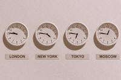

The Bridge: Deixis
Deixis is not a word that you are likely to have come across on
most initial training courses. You will, however, have come
across the phenomenon because, unless you attended a rather odd
course, the topic of reported or indirect speech will have been
mentioned at some time (we hope).
This is not just about reported speech but it explains the
phenomenon very well and goes a bit further.
This is also not an area that you would generally set out to teach but, when it comes to responding to error or to explaining structure, you cannot live without some understanding of how English refers to here, me and now and not here, not me and not now. That's what deixis is all about.
The word itself, which is pronounced /ˈdeɪksɪs/, by the way,
comes from a Greek word meaning reference and means showing or
indicating. It concerns, in language studies, how we say
where, who and when things are.
An example or two will help:
If we say, for example:
I was there with her then
we are clearly pointing to three facts:
- The place is not near the speaker (we use there not here)
- The person the speaker was with is not being addressed and is probably not present (that's the sense of the third person represented by her)
- The time is not in the present for the speaker (we use then not now)
However, if we say, for example:
I was with you here then
the case is altered and the facts are now:
- The place is near the speaker
- The person the speaker was with is present (or at least being directly addressed)
- The time is still not in the present for the speaker
Other languages operate differently in this regard and that is a source of considerable error.
 |
To make sure you have this clear before we go on, try a short matching test. |
 |
The centre of deixis |
| I am here now |
In most languages, not all, the centre of deixis is the speaker him/herself, the speaker's position and the speaker's present. The centre is, however, sometimes moved and that is a phenomenon that all languages do not share.
 |
Person |
|
I, me you he, him, she, her, it we, us they, them |
Most European languages, including English, have a fairly simple
system of deixis for people.
So, in English:
- I refers the speaker alone.
- You refers to the hearer and may be singular or plural.
- We refers to the speaker plus one or more which may
or may not include you. The pronoun may also
include they so, for example:
Houston, we have a problem
may refer to the speaker and the speaker's companion(s) (he, she or they) but not the hearer (you) or it may refer to the speaker including the hearer, you, when addressing a third party. - He, she, it, they refer to people other than the speaker and cannot include the hearer.
Other possibilities exist.
Some languages have a pronoun for we which always excludes
the hearer and another which always includes the hearer. So a
distinction can be made between:
We are leaving (without you)
and
Shall we go? (including you)
Some languages have a pronoun for they which includes
you and another which excludes you.
Many languages (in fact most) distinguish singular and plural forms
of all pronouns.
Many languages also express the level of familiarity which is
appropriate and some have more than two levels.
 |
Place |
| You are here |
All reference to place, in the normal course of events, is centred on the speaker or writer's location. We have, therefore:
- there and here (far from the speaker and close to the speaker)
- this and these, that and those (things near to and far from the speaker)
- left and right (from the speaker's viewpoint)
- up and down (from here)
and so on.
English has only two locational viewpoints in terms of proximity
(here and there, this and that
etc.) but it used to have a third possibility which referred to a
distal form and expresses something far away from both the speaker
and the hearer. An example in Middle English, now almost
obsolete is yonder but the modern English beyond
carries a similar sense.
Some languages, such as Turkish and Japanese, employ distal
expressions, incidentally, and speakers of those languages may be
surprised that English does not, making them unable to express a
common thought in their own language in a natural way in English.
There are two sorts of location:
- Absolute position which cannot be altered if the speaker
moves. For example:
The post office is opposite the station
The house is on top of the hill
in which it makes no difference at all where the speaker is positioned. - Relative position which depends on the speaker's location.
For example:
The house is on the left
The church is behind the bridge
which will, of course vary depending on where the speaker and hearer are (or are imagined to be).
How languages deal with absolute and relative position is variable and may result in some error as we shall see.
 |
Time |
| Right now |
In almost all languages, time is based on the present so all
tense forms (where they exists at all) are defined with reference to
now (the deictic centre).
There, unfortunately, the similarities end.
English makes two fundamental distinctions:
- Absolute time not related to any other time. For
example
William Smith died in 1839
in which it is irrelevant when the sentence is uttered
The train arrives at 17:30
which is true whenever it is said - Relative time which can only be understood by reference to
an absolute time. For example:
She has arrived
which can only be understood with reference to now
They had lost the money
which can only be understood with reference to another event in the past
I will have finished the work
which can only be understood with reference to another event in the future
The same distinctions apply to time adverbials so, for example:
- Absolute adverbials include:
Thursday 24th March 2019
during World War I
In the winter of 1963
since 1990
are all comprehensible without reference to the deictic centre. - Relative adverbials are far more common and include, for
example:
recently
afterwards
tens years ago
all of which need the hearer / reader to know the reference point from which they are taken.
Other languages chop up time in different ways and may rely on
concepts not of absolute and relative times but of uncompleted and
completed events or actions, time close to or distant from other
times and so on.
Concepts of time are not universals.
Moving the centre |
This is where languages differ most and the source of considerable error.
|  |
Changing time |
| Right now |
In English, some tense forms can only be understood if the hearer
mentally shifts time from now to the future or past. For
example:
I went yesterday
or
I'm leaving tomorrow
are both comprehensible by viewing the events from now (the
usual deictic centre).
However,
They will have finished soon
is only comprehensible if the hearer first moves the centre to
the future and then imagines looking back from then.
They had been running
is also only understood if the hearer mentally moves the time
centre back into the past and then looks back from then.
Other languages do not do this kind of thing or, if they do, do
things very differently.
When speech is reported there are two options:
- The time of speaking and the time of reporting are close
together, in which case:
"I am waiting"
is reported as
He said he is waiting
and
"I am arriving tomorrow"
is reported as:
He said he is arriving tomorrow. - The time of speaking and the time of reporting differ
substantially, in
which case:
"I am waiting"
is reported as
He said he was waiting
and
"I am arriving tomorrow"
is reported as
He said he was arriving the next day
For more on the alterations we make to take the deictical centre into account, see the guide to reported speech linked below.
 |
Changing person |
| Who is she? |
Again, in reported speech, this can become quite complicated
because it depends who is doing the talking and who the reporting.
For example:
- If the reporter and the reported are the same person or
people then:
"We are coming"
may be reported as
We said we are coming
or
We said we were coming
depending on whether there is a change in time. - If the reporter and the reported are different people, other
adjustments need to be made, so
"We are coming"
may be reported as
They said they were coming
and
"You are welcome"
as
He told me I was welcome
etc.
This is not necessarily intuitive.
 |
Changing place |
| You are not here |
This is the area that gives people the most trouble.
In reported speech, similar issues apply as we saw above so, for example:
- If the place of reporting is the same as the spoken words,
then:
"We are coming"
may be reported as
They said they are coming
and
"I will be here"
may be reported as:
She said she would be here - If the place changes, then other adjustments must be made:
"Pass me that hammer"
may become
He asked me to pass him this hammer
and
"Sit on the left"
may be reported as
He told me to sit on the right
and
"I will be there"
may be reported as:
He said he would be here
and there are numerous other possible complications discussed in the guide linked below.
Some verbs in English are commonly used with a mental change to
the centre of deixis which are not parallelled in other languages.
For example:
- A sentence such as
I am going to see my mother tomorrow
is clearly understood as movement away from here, hence the choice of verb.
However, if the hearer and my mother live close to each other, I may prefer:
I am coming to see my mother
because English speakers often move the centre to the person they are addressing. It's a sign of politeness.
Furthermore, if I am speaking to my mother, most English speakers will move the centre of deixis to the mother rather than the speaker so the natural form will be:
I am coming to see you tomorrow.
and other languages may well prefer:
I am going to see you tomorrow
because the centre of deixis remains on the speaker in all circumstances. - A sentence such as:
Please bring a bottle to the party
will be understood to mean that the party giver is speaking to a party goer, hence the choice of bring, not take.
However, when the bottle-bringer speaks, we may have:
I'll bring a bottle to your party, of course
because the speaker has moved the centre from themselves to the hearer.
In many languages, that will be expressed as
I'll take a bottle to your party
with no change in the centre. - Even in writing, the same centre movement is observable in
English.
When giving directions, it is common for the writer / speaker to move the centre to the standpoint of the reader / hearer so we find, for example:
Turn right off the main road and when you see the green pub sign on the left, my house is just on the left before the petrol station
although from the writer / speaker's point of view the turn may be to the left, the sign on the right and the house is probably where they are at the moment and after the petrol station, not before it.
Other languages do not necessarily do that.
|
|
Try a final matching task. |
If that's all clear enough to you, you can go on to the guides below (on the right). If you still feel slightly confused, try the links on the left.

| Guides in other areas | |
| Initial plus essential guides | In-service guides |
| reported speech essentials | deixis |
| cohesion essentials | reported or indirect speech |